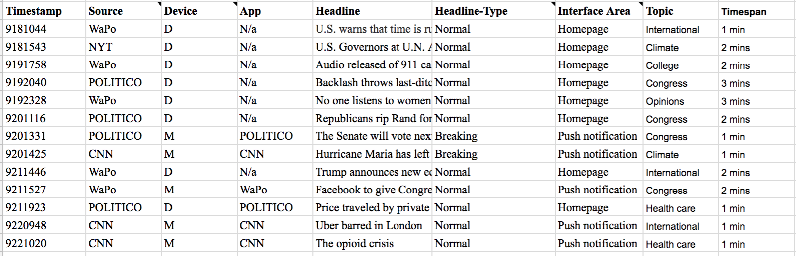
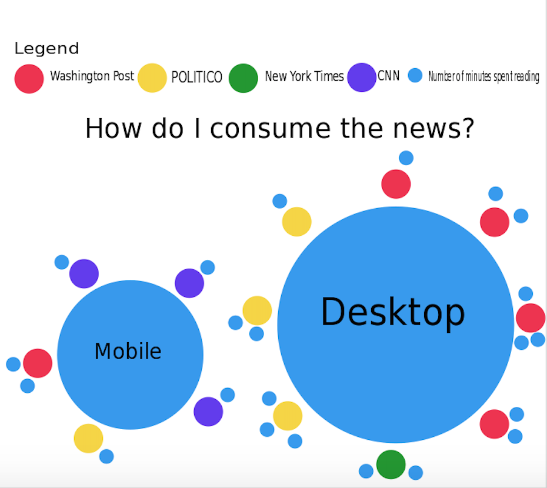

Reading the news in 2017
News is consumed in a very different way now than it was even 10 years ago. While print news continues to decline, online news has continued to grow. While I enjoy reading the news both in print and online, reading print news is becoming increasingly unaffordable, especially for students my age who have limited disposable income. I, along with many people my age, am also wary to invest in print news because of the amount of paper that it uses and thus the havoc that it can wreak on the environment. Despite the decline of print news, online news is continuing to develop and flourish. Readers can now subscribe to push notifications on mobile devices, giving instant access to breaking news even faster than ever. I became interested in measuring how I consume news online, since I am able to read news on both desktop and mobile. I was also curious to see if downloading news apps with push notifications has modified my behavior to become more mobile than desktop-oriented.
Collection process
To measure my data, I tracked every article that I read for a week. When tracking my news consumption, I recorded details including the news source (chosen from my top-four most read news outlets), the topic of the article, the number of minutes that I spent reading the article, whether I read the article on mobile or desktop, if the article had a breaking news tag, and other details.
Results
The most striking result that I obtained from the data is my preference of reading on desktop versus mobile, since that is fairly atypical for my age group, and also because I use push notifications on mobile. I used my preference of desktop over mobile as the main piece of data when creating my revised data visualization, so that it's the first distinguishment that the viewer notices when looking at my data visualization.
Implications
The kinds of preferences that I noticed while collecting data and creating my data visualization are packaged by internet providers and sold to other companies in a process called data brokering.